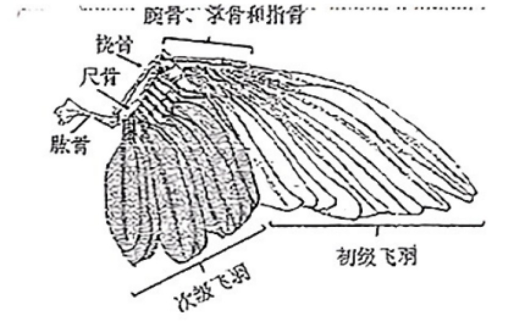
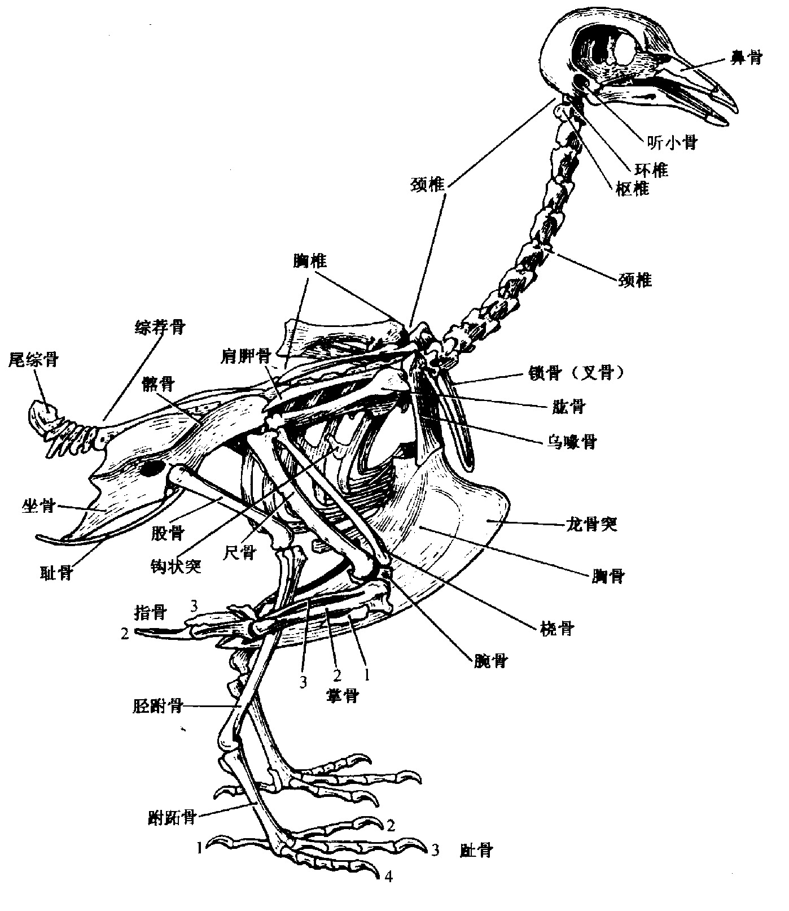
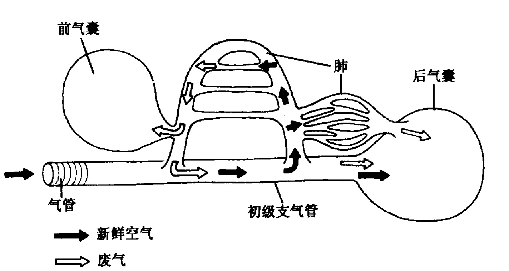

一、鸟纲适应飞翔的特征
鸟类是翱翔天空的恒温脊椎动物。其对飞翔的适应性进化主要表现在两个方面：减轻体重和加强飞翔的力量。这一原则贯穿在羽毛、骨骼、肌肉、呼吸、循环、排泄、消化等各大系统的特化之中。
（一）体表被羽——减轻体重 + 保温 + 飞翔
羽是识别鸟类的最明确无误的特征，在保温和飞翔中起重要作用。羽是表皮角质化的产物，与爬行类的角质鳞同源，但羽根沉入真皮中获得营养。
皮肤的特点是薄、松且缺乏皮肤腺。鸟类唯一由多细胞构成的大型皮肤腺是尾脂腺，分泌油质用以涂抹羽毛防水（水禽尤其发达），个别种类（如鸸鹋）无尾脂腺。
羽的结构与类型
羽的结构：埋在皮肤内的是羽根；羽根之上是羽轴，羽轴上着生羽枝，羽枝两侧又生带钩或带槽的羽小枝，由羽小枝联结成羽片。
羽的三种类型：
- 正羽：分布于体表起保护作用；着生于翼上的正羽称飞羽（对飞翔起决定性作用），着生于尾部的称尾羽。
- 绒羽：位于正羽下方，羽小枝无钩而蓬松柔软，羽轴纤细，主要起保温作用。
- 毛羽（纤羽）：杂生在正羽与绒羽之间，呈毛状，基本功能是触觉，胸部毛羽能感觉气流。
换羽：有规律，相当于爬行类的蜕皮。大多逐步换羽（不影响飞行），一般每年春秋换羽两次；许多大型水鸟几周内换掉全部羽毛。
羽色：分为色素色（化学性颜色，由黑色素、胡萝卜素等色素产生）和结构色（物理性颜色，由羽小枝表面结构对光的折射、干涉产生，如孔雀、蜂鸟的金属光泽）。
羽区和裸区：体表羽毛按一定区域分布称为羽区（pterylae），羽区之间无羽毛的区域称为裸区（apteria），有利于飞行时控制羽毛活动和散热。

（二）骨骼和运动系统——轻而坚固
1. 气质骨（pneumatic bone）：多为气质骨——轻、细、固、中空并充以空气，有的骨腔内有骨质小梁以提高抗弯曲力。这是鸟类减轻体重的关键结构。
2. 中轴骨多处愈合形成坚固支架：
- 头骨：骨片愈合成完整大颅腔和大眼窝，薄轻而坚固；上下颌前伸构成鸟喙（取食器官，鸟类特有）；现代鸟类无牙齿；次生腭不完整呈裂缝状（裂状腭）。
- 脊柱：由颈椎、胸椎、腰椎、荐椎、尾椎五部分组成，愈合形成综荐骨和尾综骨。颈椎数目多（8～25枚，天鹅25枚），椎体马鞍形称异凹型椎骨（鸟类特有），头部转动灵活可达180°（猫头鹰270°）。
- 综荐骨（鸟类特有）：由最后一个胸椎、全部腰椎、荐椎和部分尾椎愈合而成，并与腰带髂骨紧密连接，形成腰部坚固支架。
- 尾综骨（鸟类特有）：由部分尾椎愈合而成，着生尾羽，作为舵。
- 肋骨：无软骨，坚硬，每块肋骨后缘有钩状突搭在后肋骨上，增加胸廓坚固性。
3. 胸骨与龙骨突：胸骨极为发达并形成龙骨突，为鸟类主要飞行肌（大、小胸肌）提供大而坚固的附着面。不会飞的走禽（平胸总目）没有龙骨突。

4. 四肢骨和带骨：
- 前肢变翼：手部骨骼多愈合或消失，仅留第2、3、4指，指端无爪；手部着生初级飞羽，尺骨着生次级飞羽。飞羽的形状和数目是鸟类分类学的重要依据。
- 肩带：由肩胛骨、乌喙骨和锁骨构成。左右锁骨在腹中线愈合成 V 字形，称叉骨（锁骨V形），鸟类特有，具弹性，可避免扇翅时左右肩带（乌喙骨）碰撞。
- 后肢：腓骨退化为刺状；胫骨与退化的跗骨愈合成胫跗骨；远端跗骨与跖骨愈合成跗跖骨。简化成单一骨块关节并延长，增加起降弹性。大多4趾，拇趾向后适于握枝。
- 腰带：髂骨、坐骨、耻骨愈合成薄而完整的骨架，髂骨与综荐骨愈合形成开放式骨盆，适应产大型卵。
5. 发达的胸肌：胸肌是最重要的飞翔肌，约占体重的 1/5，分浅层胸大肌和深层胸小肌，一端固定在龙骨突上，另一端分别固定在肱骨腹侧和背侧；胸大肌收缩使翼下降，胸小肌收缩使翼上举。后肢肌发达集中于股部胫部以长肌腱连到趾。因脊柱愈合导致背部肌肉退化，颈部肌肉相应发达。还有特殊的鸣管肌肉支配鸣管发声。
（三）双重呼吸系统——飞翔的高效供氧
1. 肺：鸟肺是由各级支气管形成的彼此吻合的密网状管道系统，由大量细支气管组成，呈海绵状但缺乏弹性。最细分支是平行排列的支气管（三级支气管），周围有放射状排列的微气管，外分布众多毛细血管进行气体交换；微气管与背侧、腹侧支气管相通，无盲囊（与其他陆栖脊椎动物的肺泡盲囊有本质区别）。
2. 气囊：鸟类特有的气囊是呼吸的辅助系统，由单层上皮细胞围成，无气体交换功能，只储气。共有 9 个气囊（4对半），位于体壁与内脏之间，有的伸入大骨骼腔中。
- 后气囊：腹气囊和后胸气囊各1对，与初级支气管相连接。
- 前气囊：锁间气囊1个、颈气囊和胸前气囊各1对，与次级支气管相连接。
3. 双重呼吸的过程：气体进出肺的直接动力是前后气囊的扩张和缩小。
- 吸气时：新鲜空气沿中支气管大部分直接进入后气囊（储存）；同时一部分空气经次级、三级支气管在肺内微气管处进行气体交换后进入前气囊。
- 呼气时：肺内和前气囊中含 CO₂ 多的气体经气管排出；同时后气囊中所贮存的新鲜空气经"返回支"再次进入肺内进行气体交换后排出。
因此无论是吸气还是呼气，在肺内都是单方向流动的，都有新鲜空气经过肺部进行气体交换——这就是"双重呼吸"，是鸟类所特有、其他脊椎动物所没有的。实验表明，一般吸入的空气要经过两次呼吸运动才最后排出体外。

4. 飞翔与呼吸的协调：栖止时主要靠胸骨肋骨运动改变胸腔容积；飞翔时胸骨作为扇翅肌肉起点趋于稳定，主要靠气囊伸缩协助肺完成呼吸——扬翼时气囊扩张吸气，扇翅时气囊压缩呼气。故飞翔越快、扇翅越猛烈，呼吸也越快，自动保证了剧烈运动时的供氧。
5. 鸣管：由气管特化而成，由半月膜、鸣膜和鸣肌组成，位于气管与支气管交界处，是鸟类发声器官。鸣肌收缩调节鸣膜紧张度发出不同鸣叫。双重呼吸使鸟类吸气和呼气时都能发声（区别于哺乳类多仅呼气发声）。
（四）消化系统——高代谢的快速消化
鸟类代谢高、飞翔耗能大，需大量食物，消化能力强、速度快。消化道包括：喙、口腔、咽、食道、嗉囊、腺胃、肌胃、小肠、盲肠、直肠和泄殖腔。
- 喙：取食器官，外包角质鞘，无牙齿（减重）；喙和舌的形状与食性生活方式有关。
- 嗉囊：食道特化，储食软化食物；鸽育雏期还能分泌嗉囊乳（鸽乳）。
- 腺胃（前胃）：分泌含胃蛋白酶的消化液和盐酸黏液（强酸性）。
- 肌胃（砂囊）：肌肉壁厚、黏膜为角质膜、内常有沙石，具很强物理性消化能力，以补偿牙齿的缺少。肉食性鸟类肌胃不发达。
- 直肠：很短，不能大量储粪，随有随排，飞行时减轻体重；直肠和泄殖腔有明显水分重吸收功能。
泄殖腔背方有腔上囊（法氏囊），幼鸟发达，成体成为淋巴上皮腺体结构，是鸟类特有的免疫器官（产生B淋巴细胞）。
（五）循环系统——完全双循环
1. 心脏：心脏完全分为4室，动静脉血完全隔开，大大提高气体交换速率。心脏一般是同等体重哺乳动物的 1.4～2 倍大小；心跳快（300～500次/min，蜂鸟可达1200次/min）。低等脊椎动物的静脉窦在鸟类已完全消失。
2. 动脉：基本继承高等爬行类特点，但左侧体动脉弓消失，仅保留右侧体动脉弓，由右体动脉弓将左心室射出的血液输送到全身。动脉压高。
3. 静脉：肾门静脉明显退化，腔内有含平滑肌的独特瓣膜，可按需要把静脉血送入肾脏或绕过；具尾肠系膜静脉（鸟类特有），收集内脏血液进入肝门静脉。
4. 血液：红细胞具核（卵圆形），含量较哺乳类少。
（六）排泄系统——无膀胱、排尿酸
成体后肾左、右各一，通常分三叶。与哺乳类相比鸟类肾脏很大，肾小球数目多。含氮排泄物主要是尿酸；无膀胱，尿和粪便随时排出体外（随有随排），有利于减轻体重。肾小管和泄殖腔的重吸收水分能力较强，有利于保水。
海生或盐碱地区鸟类还有盐腺，位于眼眶上部，开口接近鼻孔，可排出浓度5%的氯化钠溶液。
| 系统 | 适应飞翔的特征 | 作用（减重/增力） |
|---|---|---|
| 皮肤羽毛 | 薄松少腺；正羽(飞羽)/绒羽/纤羽 | 减重＋保温＋飞翔 |
| 骨骼 | 气质骨；龙骨突；综荐骨/尾综骨；叉骨；跗跖骨愈合 | 减重＋增力 |
| 肌肉 | 胸肌占体重1/5，附着龙骨突 | 增力（飞翔动力） |
| 呼吸 | 双重呼吸；9个气囊；肺内单向气流 | 增力（高效供氧） |
| 循环 | 心脏4室完全双循环；仅右体动脉弓 | 增力（高效供氧供能） |
| 排泄 | 无膀胱；排尿酸；随排 | 减重 |
| 消化 | 无齿；嗉囊；腺胃＋肌胃(砂囊)；直肠短 | 减重＋代偿消化 |
鸟纲适应飞翔特征速记
身体流线型，颈长；具角质喙，无齿；体表被羽，皮肤薄干少腺体（仅尾脂腺）；前肢变翼；气质骨，有发达龙骨突和胸肌，综荐骨/尾综骨/跗跖骨/叉骨愈合；双重呼吸（9气囊，肺内单向气流）；心脏4室完全双循环，仅保留右体动脉弓（左体动脉弓消失，区别于哺乳类）；恒温；无膀胱，排尿酸；大脑纹状体发达，视觉发达；产大型羊膜卵。